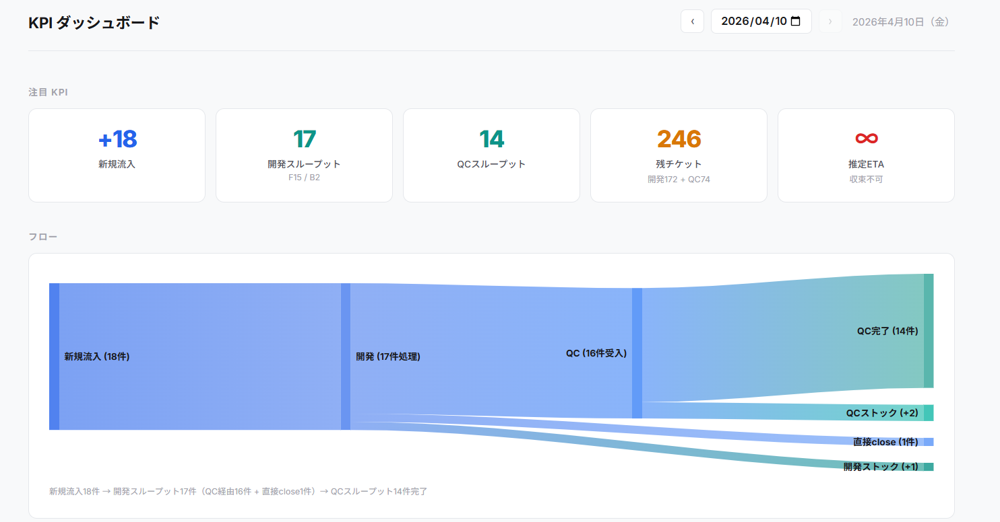

品質管理部
報告日：2026年4月
・通常のALog Cloud、New ALog、NDB向けリリースのほか、RA脆弱性対応用のリリースなどを行った
・AC 国際化対応でシンガポールリージョンをリリース
・AC/NA MessageTraceのAPI変更に対応
| 製品名 | リリース日 | ストーリー | バグ |
|---|---|---|---|
| New ALog 1.2.0 | 2026/01/15 | 28 | 38 |
| NAAmicon 1.0.6 | 2026/01/15 | 1 | 2 |
| ANF V1.1.1 | 2026/01/20 | 1 | 6 |
| NDB-1.1.2 | 2026/01/20 | 2 | 7 |
| ALog Cloud 2.8.9.1 | 2026/01/29 | 1 | 2 |
| Resource Athlete - 2.8.0 | 2026/01/30 | 1 | 1 |
| NDB-1.1.0+hotfix.2 | 2026/02/04 | 1 | 1 |
| NAAmicon 1.0.7 | 2026/02/26 | 0 | 1 |
| NDB-1.1.3(Day2.3) | 2026/03/02 | 4 | 2 |
| NDB Day3 | 2026/03/13 | 45 | 24 |
| ANF Day3 | 2026/03/13 | 13 | 2 |
| ALog Cloud 2.8.10 | 2026/03/16 | 19 | 20 |
| ALog ConVerter V8.8.0_V3.8.0 | 2026/03/31 | 10 | 8 |
| 丸紅様用 | 2026/03/31 | 0 | 0 |
| New ALog 1.3.0.1 | 2026/03/31 | 0 | 2 |
変換タスク最適化対応に伴うメモリ算出ロジックの不備により、11:15頃から一部変換処理でエラー発生。対象は約160社中87社。ログロストなし。15:58に復旧完了。
3/16にALog Cloudの変換最適化処理の不備により、約半数の顧客環境でログ変換エラーが発生したが、同日中に切り戻しと再変換で復旧し、ログロストは発生していない。今後は算出ロジックとテスト設計を見直し、再発防止を図る。
| 本契約 | 1月 | 2月 | 3月 |
|---|---|---|---|
| 契約数 | 158 | 165 | 172 |
| 為替レート | 158.28 | 156.65 | 160.29 |
| コスト (円) | 2,322,527 | 2,526,518 | 2,652,830 |
| 1テナントあたりコスト (円) | 14,700 | 15,312 | 15,423 |
| AWS支払額 (円) | 4,039,889 | 3,918,160 | 4,589,877 |
コメント: 契約数は順調に増加（1月158社→3月172社）。コスト/GBは$3.50〜$3.78で推移。3月は為替レートが160円台に上昇したため、円建て支払額が増加。

ダッシュボードにて可視化し、毎日進捗共有
月を追うごとに増加傾向。4月は月末100件超ペース
| NewALog | 129件 | 40.8% |
| ALogCloud(SaaS) | 66件 | 20.9% |
| LCF | 18件 | 5.7% |
| ALog for Windows | 16件 | 5.1% |
| ALogConVerter | 16件 | 5.1% |
NewALog + ALogCloud で全体の6割以上
経営サマリ: 2026年1〜4月のエスカレーション対応は316件。月あたり80〜100件ペースで推移し、NewALog（129件）とALogCloud（66件）が全体の6割超を占める。
| 終了 | 135件 |
| レビュー待ち | 123件 |
| 進行中 | 41件 |
| フィードバック | 15件 |
| 新規 | 1件 |
| 回答済み | 1件 |
| キーワード | 件数 |
|---|---|
| ログ関連 | 101件 |
| エラー | 55件 |
| タスク | 54件 |
| アラート | 46件 |
| 収集 | 43件 |
| レポート / インポート | 25件 / 24件 |
傾向分析: 「ログ収集 → 変換 → レポート」の一連のパイプラインに課題が集中。ログ関連の問い合わせが101件と最多で、収集・変換・取り込みに関する問い合わせが頻発している。
コメント: 丸紅案件は3月に検収完了。継続案件は2Qも対応を継続予定。
営業メンバーも参画し、週4時間程度クラウドスパイス様と会議にて仕様確認/要件整理を推進中。最郟9月、目標12月をめどに推進
東川 / 久鍋 / 加茂
小宮山 / 小野瀬
清水 / 浅野 / 石井
宍倉
寺園さん → 吉田 康陽 / 鈴木 琴美
別府さん → 安藤 隼人 / 井上 佳希
簑嶋さん → 中山
高本さん → 大高
コメント: 営業部門との連携を強化し、全社横断でプロジェクトを推進中